Cultivos
Ara la tierra con un azadón, planta la semilla y espera: los cultivos crecen con reloj real, aunque estés lejos.
La tierra arada necesita agua a 4 bloques o menos en horizontal (la lluvia también riega), y luz de nivel 9 si no tiene el cielo abierto. Se puede arar: Tierra, Tierra, Tierra, Tierra, Tierra, Tierra, Tierra, Tierra, Tierra, Tierra, Barro.
Azadones:  Azadón de Madera
Azadón de Madera  Azadón de Cobre Forjado
Azadón de Cobre Forjado  Azadón de Hierro Templado
Azadón de Hierro Templado  Azadón de Titanio Ligero
Azadón de Titanio Ligero
 Trigo Dorado del Valle8 min · 4 fases · da 1–2Semilla: Semillas de Trigo → TrigoSilvestre en Llanura
Trigo Dorado del Valle8 min · 4 fases · da 1–2Semilla: Semillas de Trigo → TrigoSilvestre en Llanura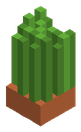
Patata Rojiza de Colina6 min · 3 fases · da 2–4Semilla: Semillas de Patata Rojiza → Patata RojizaSilvestre en Montaña, Llanura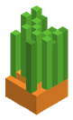
Zanahoria Silvestre6 min · 3 fases · da 2–3Semilla: Semillas de Zanahoria → ZanahoriaSilvestre en Bosque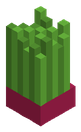
Remolacha Dulce7 min · 3 fases · da 1–3Semilla: Semillas de Remolacha → RemolachaSilvestre en Río, Pradera Floral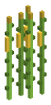
Maíz de la Sabana10 min · 5 fases · da 1–3Semilla: Semillas de Mazorca de Maíz → Mazorca de MaízSilvestre en Sabana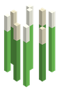
Arroz Fluvial8 min · 4 fases · da 2–4Semilla: Semillas de Arroz → ArrozSilvestre en Río, PantanoTomate Trepador de Estaca8 min · 5 fases · da 2–3Semilla: Semillas de Tomate → TomateSilvestre en Arboleda de Otoño · rebrota tras cosechar
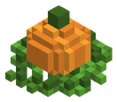
Calabaza Gigante de Otoño10 min · 4 fases · da 1–1Semilla: Semillas de Calabaza → CalabazaSilvestre en Arboleda de Otoño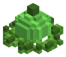
Melón Refrescante del Oasis10 min · 4 fases · da 1–1Semilla: Semillas de Melón → MelónSilvestre en Desierto, Oasis Místico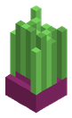
Cebolla Morada de Huerto6 min · 3 fases · da 1–3Semilla: Semillas de Cebolla Morada → Cebolla MoradaSilvestre en LlanuraAjo Blanco de Cripta6 min · 3 fases · da 1–3Semilla: Semillas de Ajo Blanco → Ajo BlancoSilvestre en Taiga de Pinos
Bambú Gigante Comestible8 min · 4 fases · da 2–4Semilla: Semillas de Brote de Bambú → Brote de BambúSilvestre en Bosque de Bambú Ancestral · rebrota tras cosechar
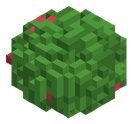
Bayas Dulces de la Taiga6 min · 4 fases · da 2–4Semilla: Semillas de Bayas Dulces → Bayas DulcesSilvestre en Taiga de Pinos · rebrota tras cosechar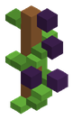
Uvas Negras de Viñedo8 min · 4 fases · da 2–4Semilla: Semillas de Uvas Negras → Uvas NegrasSilvestre en Pradera Floral · rebrota tras cosechar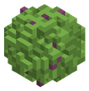
Higos del Desierto8 min · 4 fases · da 2–3Semilla: Semillas de Higos → HigosSilvestre en Desierto · rebrota tras cosechar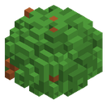
Cacao Tropical8 min · 4 fases · da 1–3Semilla: Semillas de Vaina de Cacao → Vaina de CacaoSilvestre en Selva · rebrota tras cosechar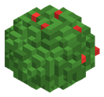
Manzanas Rojas del Bosque10 min · 4 fases · da 2–4Semilla: Semillas de Manzana Roja → Manzana RojaSilvestre en Bosque · rebrota tras cosechar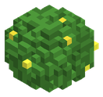
Limonero de la Costa10 min · 4 fases · da 2–4Semilla: Semillas de Limón → LimónSilvestre en Playa, Selva · rebrota tras cosechar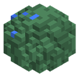
Bayas Azules del Glaciar8 min · 4 fases · da 2–4Semilla: Semillas de Bayas Azules → Bayas AzulesSilvestre en Tierras nevadas · rebrota tras cosechar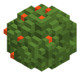
Chili Ígneo del Dragón12 min · 4 fases · da 1–3Semilla: Semillas de Chili Ígneo → Chili ÍgneoSilvestre en Picos Volcánicos · suelo: Ceniza volcánica · no necesita agua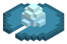
Loto Glacial de Permafrost14 min · 4 fases · da 1–2Semilla: Semillas de Pétalo de Loto Glacial → Pétalo de Loto GlacialSilvestre en Glaciares de Hielo Azul · suelo: Hielo azul · no necesita aguaHongo de Sombrero Fosfórico10 min · 3 fases · da 1–3Semilla: Semillas de Hongo Fosfórico → Hongo FosfóricoSilvestre en Bosque de Hongos Gigantes · suelo: Tierra, Pie de seta gigante, Barro · no necesita agua · no necesita luz
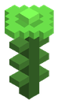
Flor Tóxica de Vitriolo14 min · 4 fases · da 1–2Semilla: Semillas de Flor de Vitriolo → Flor de VitrioloSilvestre en Ciénaga Tóxica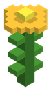
Orquídea Solar de Oricalco16 min · 4 fases · da 1–1Semilla: Semillas de Orquídea Solar → Orquídea SolarSilvestre en Selva Primordial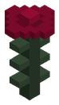
Rosa del Ocaso de las Sombras14 min · 4 fases · da 1–1Semilla: Semillas de Rosa del Ocaso → Rosa del OcasoSilvestre en Bosque UmbríoFruta Astral de las Constelaciones20 min · 4 fases · da 1–1Semilla: Semillas de Fruta Astral → Fruta AstralSilvestre en Bosque Celestial
Melón del Núcleo de Magma20 min · 4 fases · da 1–1Semilla: Semillas de Melón de Magma → Melón de MagmaSilvestre en Núcleo Ígneo · suelo: Basalto · no necesita agua
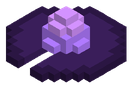
Loto del Vacío Cósmico20 min · 4 fases · da 1–1Semilla: Semillas de Pétalo del Vacío → Pétalo del VacíoSilvestre en Grieta del Vacío · suelo: Roca del vacío · no necesita agua